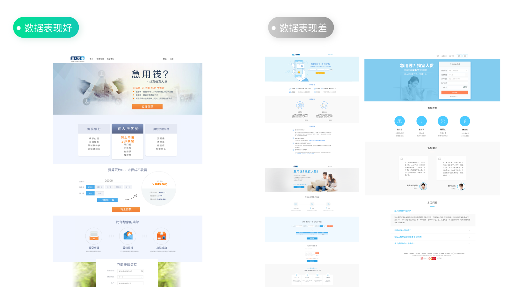
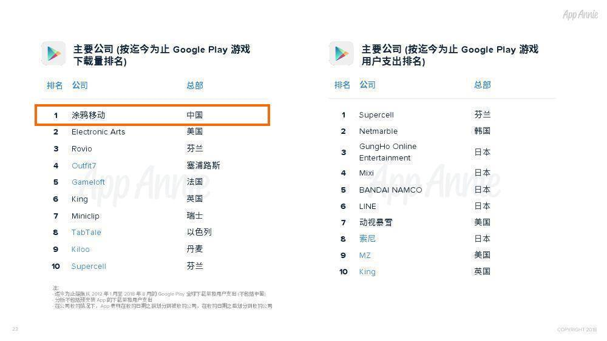
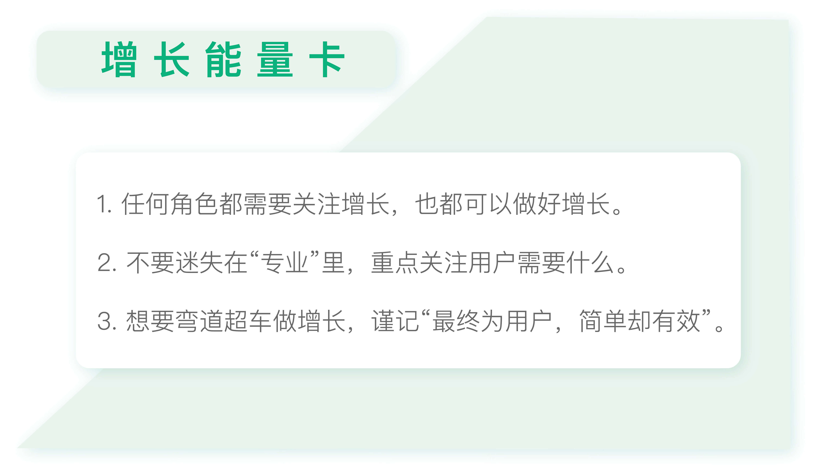

- 00 开篇词 人人都是增长官.md
- 01 预习 增长小白如何“弯道超车”？.md
- 02 预习 如何理解“增长”？.md
- 03 预习 不同职能如何做好增长？.md
- 04 预习 做增长如何处理职能间的矛盾？.md
- 05 正确目标找不对，天天加班也枉然.md
- 06 活学活用北极星指标.md
- 07 OKR如何助力增长？.md
- 08 不懂用户调研？那就对了！.md
- 09 调研目标：在差异性洞察中找到爆破点.md
- 10 数据分析：在“花式对比”中发现玄机.md
- 11 用户分类：围绕北极星指标细分人群.md
- 12 用户访谈：像侦探一样寻找破案线索（上）.md
- 13 用户访谈：像侦探一样寻找破案线索（下）.md
- 14 提炼用户差异，发现增长契机.md
- 15 挖掘产品优势，打破增长瓶颈.md
- 16 定位营销差异，抢占用户心智.md
- 17 一级方向：找到增长爆破点.md
- 18 B端产品如何调研？.md
- 19 全局规划增长机会.md
- 20 统筹全局的用户增长地图.md
- 21 案例解析：定义关键增长指标.md
- 22 正负双向洞察，找准切入点.md
- 23 二级机会：制定增长策略.md
- 24 为一家濒临破产的公司制定增长策略（上）.md
- 25 为一家濒临破产的公司制定增长策略（中）.md
- 26 为一家濒临破产的公司制定增长策略（下）.md
- 27 为什么指标数据怎么优化都不提升？.md
- 28 案例解析：打造增长闭环（上）.md
- 29 案例解析：打造增长闭环（下）.md
- 30 案例解析：唤醒沉睡用户（上）.md
- 31 案例解析：唤醒沉睡用户（下）.md
- 32 没有分解，就无缘增长.md
- 33 四个要点颠覆传统需求文档.md
- 34 三级落地：无限场景应用.md
- 35 手把手教你设计一次成功的实验（上）.md
- 36 手把手教你设计一次成功的实验（下）.md
- 37 积少可成多，别针换别墅.md
- 38 四级延续：增长组件库案例.md
- 39 以用户为中心增长.md
- 增长导航图 增长专栏的知识架构是怎样的？.md
- 尾声 结束意味着新的开始.md
- 预习答疑 你需要一张思维导图吗？.md
01 预习 增长小白如何“弯道超车”？
你好，我是刘津。
今天我要跟你分享的主题是在全民增长的新时代，增长小白如何“弯道超车”。
互联网进入下半场后，越来越多的人开始关注增长，那么一个毫无基础的新人，应该如何学习做增长呢？
在讲具体方法之前，今天我要先跟你谈谈做增长最重要的理念——“最终为用户，简单却有效”。
增长职能的下沉与渗透
国外研究增长比国内要早很多，有一本很受欢迎的增长书籍《硅谷增长黑客实战笔记》，里面提到过优秀增长设计师的特征，我非常认同，并且稍微改改就可以适用于所有角色：
业务水平高、出活快；
对增长指标和用户心理有深刻的了解，认同“产品/运营/开发……最终为用户”服务的理念；
不歧视“简单却有效”的方式。
这几条看似普通，但是实际能做到的人可谓少之又少。下面我想跟你分享我身边切实发生的3个实例，它们会帮助你更加直观地理解。
实例1
在我刚进入宜人贷时，我们的设计师做了很多努力，试图提升宜人贷营销落地页面的转化，但是效果都不好。反倒是其他团队设计出的一个看起来有些“土气”的页面效果最好。这就让我们的设计师很是想不通。为什么“漂亮”“美观”的页面数据不好，不好看的反而效果好呢？

有的人最后忍不住了，泄气地嘟囔：我看啊，设计这东西根本就不能用数据来衡量。其他人纷纷点头称是。
确实，大家普遍认为设计是难以被量化的。但我对比过几版页面之后发现，数据表现好的那个页面胜在内容清晰、重点突出；而其他页面虽然表面精致，但看起来却很费劲。
不过这个观点依然很难让视觉设计师认同，他们觉得界面好看才是最重要的。
实际上这种情况在公司里发生过无数次：设计团队出的方案，每个领导的意见都不一样。因为每个人对定位、对用户的理解、个人审美都不一致，最终只能靠所谓的“感觉”来决定，有时候还会不了了之。
这种没有条理的解决方法促使我产生了“发起一次用户调研”的想法。希望通过调研帮助我们的团队明确产品定位及用户特征，更好地促进产品优化。这个想法得到了领导的大力支持。
于是我们团队第一次走出了北京，来到了宜人贷用户较集中的二三线城市。正是在这里，在我们真实客户的生存环境下，我们才真正了解到问题所在。
我们的用户中有很大一部分出身农村或小城镇，文化水平不高，平时娱乐活动也不多，是那种希望通过努力奋斗让家人生活得更好的普通人。
看到这里，你一定明白了。
对大部分宜人贷用户来说，简单、朴实、有力的界面及文案是最适合的。所有过度的修饰对他们来说都是一种负担。
而当时设计师们的主流审美是要做精致、细腻、时尚的“小清新”风格，这显然和用户并不匹配。但是如果让设计师放弃引以为傲的流行风格，去迎合真实的用户，又有多少人愿意接受呢？
每次我分享完这个故事，都会有设计师问我：工作中如何平衡审美和用户需求？其实，如果真的认同了“职能最终为用户服务”的理念，这个问题还会存在吗？
实例2
类似的情况总是在发生，我有个同行朋友也遇到了这样的问题。他们从一家知名公司挖了一位很优秀的设计师过来，但由这位设计师进行改版后的App，数据不升反降。
他找了一些用户进行调研，问他们对界面的看法，绝大部分用户并不能说出个所以然来。不过有一位用户的反馈引起了他们的注意。
那位用户略带迟疑地提到：“这个界面看起来很精致。”
朋友感觉出了用户的欲言又止，马上追问道：“精致不是件好事吗？”
用户说：“太精致了，所以我感觉像骗子。你看这风格，一看就是年轻人做的，一家互联网金融公司的风格这么年轻活泼，我怀疑你们老板是个90后，说不定哪天就卷款跑了。”
这种回答实在是让人哭笑不得，但是仔细想想，却又无比有道理。
对于金融类产品来说，用户关注的是界面好不好看吗？不是。用户关注的第一要点是这个金融产品安全不安全、可靠不可靠。
实例3
我有个朋友是做海外游戏的，他的公司叫Doodle涂鸦移动，可能很多人没有听说过这家公司，然而它的实力不容小觑。
根据App Annie在2018年10月发布的《Google Play 10年数据纵览》显示，Doodle出品的游戏下载量迄今为止在Google Play上排名第一。要知道，这家公司创办还不到十年。

App Annie《Google Play 10年数据纵览》
Doodle的游戏取得这么好的成绩是因为游戏品质高吗？完全不是，可以说游戏的画面、体验等都远低于行业平均水平。有些业内专业人士甚至不把他当作同行，觉得他是来捣乱的。
可为什么这样的游戏能获得大量用户的青睐呢？
把时间调回到十年前，那个时候的网络不像现在这么发达，而当时的游戏一般都要八九百兆的样子，用户下载的时间和流量成本很高。
而我这个朋友反其道而行之，要求把游戏容量都控制在五兆内，这样用户下载起来就会非常便捷，那下载量自然就大了呀。
你可能会很想问，为什么他会做出这样的决策呢？
答案你绝对意想不到：因为他是个游戏外行。
他们在游戏品质方面没有任何竞争力，这一点反而给了他弯道超车的机会，促使他把更多精力放在了用户身上。他洞察到非常关键的一点：除了某种游戏的发烧友以外，绝大部分用户下载游戏只是为了打发时间。
所以用户需要的是简单、容易下载的休闲类小游戏，而不是追求极致画面效果的精致游戏。
就是这个无比正确的洞察，帮助他们开创了手机休闲游戏的新方向。
在工程师和设计师不断“偷工减料”的过程中，去掉不必要的装饰、效果、功能，最终达到了五兆的要求。尽管画面不精致、体验也不完美，但却满足了用户可轻松下载这样的核心需求，最终赢得了大量用户。
也就是说，靠着正确的用户洞察、精益的思维，他这样一个“外行”也能把诸多竞争对手远远抛在身后。通过我的专栏和相关练习，我希望也能带你学会做这样的洞察，成为增长高手。
小白如何“弯道超车”
前面三个实例说了这么多，我最希望你能明白的是以下几点：
每个职能或角色都与增长息息相关；
做增长不仅要了解用户，更要上升到“人性洞察”层面，挖掘到用户的潜在需求；而不是靠主观臆想，把所谓的“最好的、最专业的”给用户；
“不专业”有可能反而是优势，做增长的过程中要学会扬长避短，不要盲目跟从同行。
懂得使用精益思维，用最简单的方式实现效果，而不拘泥于条条框框。
浓缩起来，就是“最终为用户，简单却有效”这十个字。
今天，如果你能做到这种意识形态上的转变，那就算是迈出了增长的第一步，也是至关重要的一步。
即使有很强的专业能力或者经验，如果做不到上述的要求，那也是没办法做好增长的。所以说，做增长靠的并不完全是手段或方法，更重要的是对用户的深刻洞察。
在这个快速变化的时代，“增长”的正反两面十分明显：一方面增长时代人人自危，另一方面，新机遇不断涌现。
增长是一个全新的理念，不管是职场新人还是老鸟，也无论是产品经理、运营、推广、设计师、工程师等等，大家都处在同样的起跑线上。谁率先领会到增长的真谛，谁就更容易在职场中脱颖而出。
这其实就是你能抓住的“弯道超车”的机会。

思考题
看过了前面几个小例子，不妨想想你自己正在做的事情。你洞察到的你的用户最想要、最关注的是什么？（所谓“洞察”一定不是明摆着的东西，而是大多数人意识不到的）如何通过满足他们的潜在需求获得增长呢？有没有更简单的方式呢？
欢迎你把自己的想法写在留言区，与我和其他同学一起讨论。如果你觉得有所收获，也欢迎把文章分享给你的朋友。
© 2019 - 2023 Liangliang Lee. Powered by gin and hexo-theme-book.